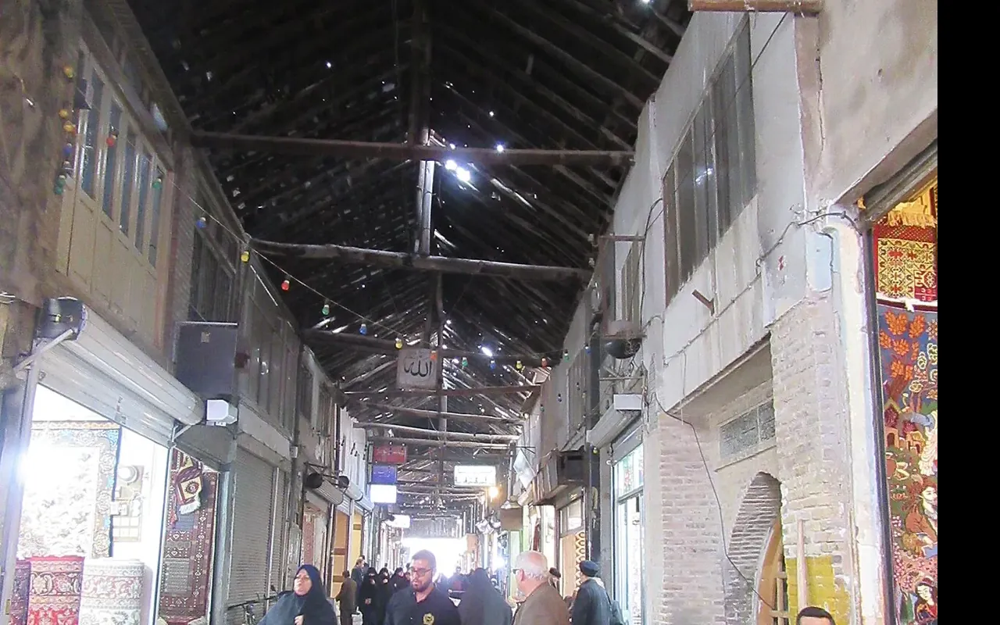

الطعام والتسوق في مشهد: دليل عملي للزائر العربي

الإجابة المختصرة
لاختيار الطعام في مشهد، تعرّف إلى الأطباق المحلية مثل الأرز واليخنات، واسأل عن المكونات وطريقة التحضير قبل الطلب. راعِ نظافة المكان واحتياجات الأطفال أو من لديهم حساسية غذائية، ولا تعتمد على شهرة المطعم وحدها؛ فالسؤال المباشر يساعدك على اختيار وجبة تناسبك.
تجربة الطعام جزء من السفر، لكن اختيار المطعم المناسب لا يتوقف على شهرة الطبق. موقع المطعم، ونظافة المكان، ومكونات الوجبة، واحتياجات الأطفال أو من لديهم حساسية، كلها عوامل تستحق السؤال قبل الطلب.
تعرف إلى الأطباق قبل الطلب
تشتهر المائدة المحلية بأطباق الأرز واليخنات والكباب، وقد تختلف طريقة التحضير والتوابل وحجم الحصة بين المطاعم. اسأل عن المكونات وطريقة الطهي، ولا تفترض أن اسم الطبق يعني وصفة موحدة في كل مكان.
الطعام للعائلات والأطفال
تحقق من توفر مقاعد مناسبة ووجبات بسيطة ومياه شرب آمنة ودورات مياه عند الحاجة. إذا كان الطفل لا يتحمل التوابل أو مكوناً معيناً، اشرح ذلك بوضوح قبل تجهيز الطلب واطلب تأكيداً من العاملين.
الحساسية والاحتياجات الغذائية
إذا كانت لديك حساسية غذائية شديدة، لا تعتمد على التخمين أو الترجمة وحدها. اذكر المكون بوضوح، واسأل عن احتمال التلوث التبادلي، واختر مكاناً يستطيع الإجابة عن أسئلتك. إذا لم تحصل على إجابة مطمئنة، فلا تخاطر بالطبق.
قارن السعر قبل الطلب
راجع القائمة والأسعار الحالية وحجم الحصة وأي رسوم إضافية قبل الطلب. الصور على الإنترنت لا تثبت السعر الحالي أو توفر الطبق. إذا كانت القائمة غير واضحة، اسأل عن السعر النهائي لتجنب سوء الفهم.
اختيار الموقع وساعات العمل
اختر مكاناً يتناسب مع مسار يومك، ولا تجعل وجبة واحدة سبباً للعودة في وقت متأخر أو إرهاق كبار السن. تحقق من العنوان وساعات العمل في يوم الزيارة، خصوصاً في العطل والمواسم المزدحمة.
عبارات فارسية مفيدة عند طلب الطعام
يمكن أن تساعدك العبارات القصيرة التالية في السؤال عن القائمة والمكونات. اطلب دائماً رؤية السعر في القائمة قبل الطلب، خصوصاً إذا لم تكن الأسعار واضحة.
- لطفاً، منو را نشان دهید. — من فضلك، أرني قائمة الطعام.
- قیمت این غذا چقدر است؟ — كم سعر هذا الطبق؟
- این غذا چه موادی دارد؟ — ما مكونات هذا الطعام؟
- من به ... حساسیت دارم. — لدي حساسية من ...
- لطفاً بدون ... — من فضلك، من دون ...
إذا كانت الحساسية شديدة، لا تعتمد على عبارة شفهية وحدها؛ جهّز بطاقة مكتوبة باللغة الفارسية تذكر المادة التي يجب تجنبها واحتمال التلوث التبادلي، واطلب من العاملين تأكيد فهمهم لها.
كيف تختار مكان الطعام؟
تحقق من الموقع الفعلي وساعات العمل الحديثة وقائمة الطعام والأسعار قبل الذهاب، خصوصاً إذا كان وقتك محدوداً أو تسافر مع أطفال. اقرأ التقييمات الحديثة بحذر، وقارن بين أكثر من مصدر، ولا تعتبر التقييم وحده ضماناً للنظافة أو الجودة.
احسب المسافة سيراً من مكان إقامتك أو مسار الزيارة، لا المسافة الخطية فقط. ويمكنك الرجوع إلى دليل الطعام والتسوق في مشهد للتخطيط العام.
مثال موثق قرب الحرم: مجموعة راستين الغذائية والترفيهية
يذكر الموقع الرسمي لمجموعة راستين أن موقعها في شارع شيرازي، بين شيرازي ۳ و۵، مجمع امید است. ويعرض الموقع قائمة المطعم وقوائم منفصلة للمقهى والوجبات السريعة والفطور. كما يذكر وجود مساحة ترفيهية عائلية؛ تحقق مباشرة من تشغيل الأنشطة ومدى ملاءمتها في يوم الزيارة.
صفحة المطعم عن موقعه قرب الحرم · منيو المطعم · منيو المقهى · منيو الوجبات السريعة
العنوان المنشور: شارع شيرازي، بين شيرازي ۳ و۵، مجمع امید. يذكر الموقع رقم التواصل ۰۹۳۵۹۲۰۶۱۶۶. راجع الموقع الرسمي أو اتصل قبل التوجه للتحقق من ساعات العمل والأسعار والتوفر.
هذه معلومات منشورة من جهة المطعم نفسه وليست تقييماً مستقلاً. لا نعتمد هنا على ادعاءات «الأفضل» أو أسعار غير مؤرخة، كما لا نضمن المسافة الدقيقة؛ تحقق من مسار المشي على الخريطة وفق مدخل الحرم الذي ستستخدمه.
أفكار للتسوق والهدايا
من المنتجات التي قد يبحث عنها الزوار الزعفران والحلويات والمكسرات والحرف والهدايا التذكارية. عند شراء المنتجات الغذائية، انتبه إلى تاريخ الإنتاج والانتهاء، وسلامة العبوة، والوزن الصافي، وبيانات المنتج المتاحة.
قارن أكثر من متجر، واسأل عن السعر النهائي والكمية والوزن قبل الدفع. عند شراء الزعفران أو المنتجات مرتفعة القيمة، اطلب فاتورة واضحة وتحقق من بيانات المنتج، ولا تعتمد على وصف تسويقي وحده لإثبات الجودة أو المنشأ.
كيف تجهز المشتريات للعودة؟
قبل شراء كميات كبيرة من الطعام أو التوابل أو الهدايا، تحقق من قواعد الجمارك في بلد الوصول وشروط شركة الطيران أو النقل. قد تختلف القيود حسب نوع المنتج والكمية والتغليف، ولا تكفي تجربة مسافر آخر لضمان السماح بإدخال المشتريات.
احتفظ بالفواتير وبالعبوات الأصلية كلما كان ذلك مناسباً، وتجنب شراء منتجات لا تتضح مكوناتها أو طريقة تعبئتها. إذا كانت لديك رحلة جوية، راجع شروط الأمتعة والمواد المسموح بها قبل التوجه إلى المطار.
نصائح لتسوق أكثر راحة
- حدد ميزانية تقريبية للمشتريات قبل الخروج.
- قارن السعر حسب الوزن أو الكمية، وليس حسب شكل العبوة فقط.
- اسأل عن سياسة الاستبدال أو الاسترجاع قبل الدفع.
- خطط للتسوق في وقت يناسب برنامج الزيارة واحتياجات الأسرة.
- راجع قواعد إدخال المشتريات إلى بلدك قبل شراء كميات كبيرة.
اقرأ أيضاً
وقبل شراء الهدايا للعودة، راجع قواعد نقلها في دليل الهدايا وقواعد نقلها.
الحساسية الغذائية: لا تعتمد على اسم الطبق
قد تختلف المكونات وطريقة التحضير من مطعم إلى آخر، حتى عندما يحمل الطبق الاسم نفسه. إذا كانت لديك حساسية أو قيود غذائية، فاذكر المكوّن الذي يجب تجنبه بوضوح قبل الطلب.
- اسأل عن المكونات الأساسية والصلصات والزيوت والمكسرات ومنتجات الحليب والقمح.
- تحقق مما إذا كانت الوجبة تُحضّر بأدوات أو أسطح مشتركة مع المكوّن الذي يسبب الحساسية.
- إذا لم يستطع العاملون تأكيد المكونات أو طريقة التحضير، فاختر وجبة أخرى أو مكاناً أكثر وضوحاً.
- للعائلات، اطلب قائمة الطعام والأسعار قبل الجلوس، واسأل عن حجم الحصة ووقت التحضير.
عند الحاجة الطبية، لا تعتبر سؤال المطعم بديلاً عن خطة التعامل مع الحساسية التي وضعها الطبيب.
مصادر رسمية ومراجع للتحقق
استخدم هذه الروابط للتحقق من المعلومات قبل الحجز أو الزيارة. قد تتغير الخدمات والأسعار وساعات العمل وقواعد السفر؛ المرجع النهائي هو الجهة المختصة أو مقدم الخدمة في تاريخ رحلتك.
أدلة مرتبطة على الموقع
أسئلة شائعة
هل الطعام في كل المطاعم مناسب للعائلة؟
لا؛ تحقق من المقاعد والنظافة والقائمة واحتياجات الأطفال قبل الجلوس.
كيف أتعامل مع الحساسية الغذائية؟
اشرح المكون بوضوح واسأل عن المكونات والتلوث التبادلي، ولا تأكل إذا لم تحصل على إجابة مطمئنة.
هل أسعار المطاعم ثابتة؟
قد تتغير القائمة والأسعار؛ راجع القائمة الحالية واسأل عن السعر النهائي قبل الطلب.
هل أستطيع العثور على أطباق مألوفة؟
تختلف القوائم من مكان لآخر؛ اسأل عن المكونات وطريقة التحضير بدلاً من الاعتماد على الاسم فقط.
هل ساعات العمل المنشورة مضمونة؟
لا؛ تحقق من ساعات العمل والعنوان مباشرة في يوم الزيارة، خاصة خلال العطل والمواسم.